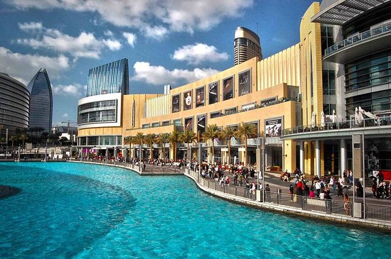

Dubai : Future City

Not just home to the world’s tallest building and the Arab world’s most important financial centre, Dubai is also assembling the world’s largest solar park and investing substantially in creating a state-of-the-art city through technologies such as the Internet of Things (IoT), Big Data and Artificial Intelligence. These technologies have the potential to transform our cities; they are the tools to make them smarter and more sustainable. Key to the smart city is connectedness - information and communication technology across various areas such as traffic and transportation, water and waste, electricity as well as buildings. The common denominator across all of these is the generation of data, by cameras and sensors that is communicated across the cities’ networks and crunched by its computers. Using this data in the right way enables the city to become more sustainable as its resource footprint. Continuing to prioritise people’s happiness as its ultimate success indicator, Smart Dubai has announced an ambitious roadmap to prepare Dubai to embrace the future and emerge as a world-leading city by 2021, in celebration of the UAE’s golden jubilee. By leveraging the potential of new technologies, Dubai aims to deliver customer, financial and resource & infrastructure impact spanning the six city dimensions of smart living, smart economy, smart governance, smart mobility, smart environment and smart people.
The UAE as a whole has come a long way in embracing and the utilising advanced technologies, establishing the Emirate as a global hub for technology and an exemplary smart city of the future.
- Her Excellency Aisha bin Bishr, Director General, Smart Dubai

Burj Khalifa
The Burj Khalifa is Dubai's most recognized landmark and major tourist attraction, standing at 829.8 meters as the world's tallest building and the most prominent of the city's sites of interest.
A visit to the observation deck on the 124th level is a must-do for most visitors while in the city. From this vantage point, the views of the metropolitan skyline are just breathtaking.
The slick observation deck experience includes a multimedia presentation on both Dubai and the building of the Burj Khalifa (completed in 2010) before a high-speed elevator whizzes you up to the observation deck for those 360-degree views out across the skyscrapers to the desert on one side and the ocean on the other. Nighttime visits are particularly popular with photographers due to Dubai's famous city-lights panoramas. Buy your Burj Khalifa "At the Top" Entrance Ticket in advance to avoid long line-ups, especially if you are planning to visit on a weekend. Back on the ground, wrapping around the Burj Khalifa, are the building's beautifully designed gardens, with winding walkways. There are plenty of water features including the Dubai Fountain, the world's tallest performing fountain, modeled on the famous Fountains of Bellagio in Las Vegas
Malls
Dubai Mall is the city's premier mall and one of the city's best places to visit for a day of shopping and indoor activities to keep the kids busy. It provides entry to the Burj Khalifa, as well as the Dubai Aquarium. There is also an ice-skating rink, gaming zone, and cinema complex if you're looking for more entertainment options. The shopping and eating is endless, and there are nearly always special events such as live music and fashion shows within the mall. The most famous of these are the annual Dubai Shopping Festival in January and February and the Dubai Summer Surprises Festival in July and August. Location: Doha Road, just off Sheikh Zayed Road
